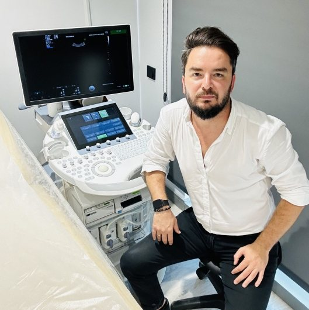
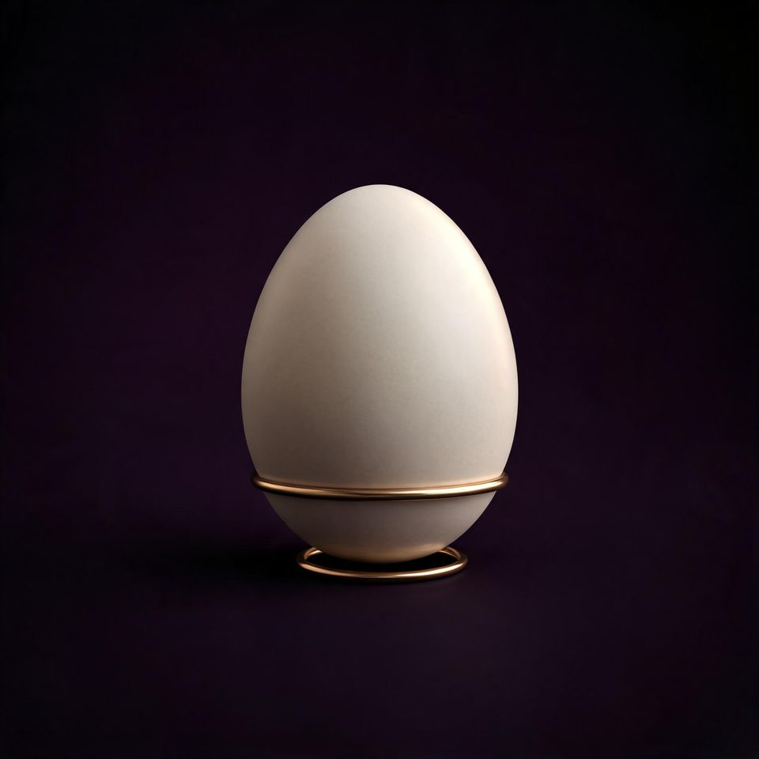
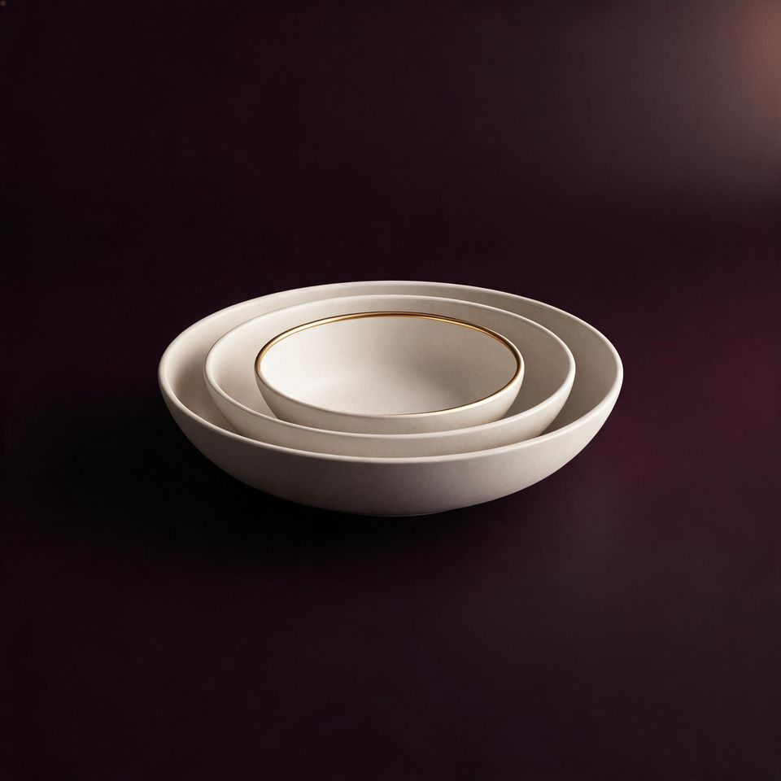
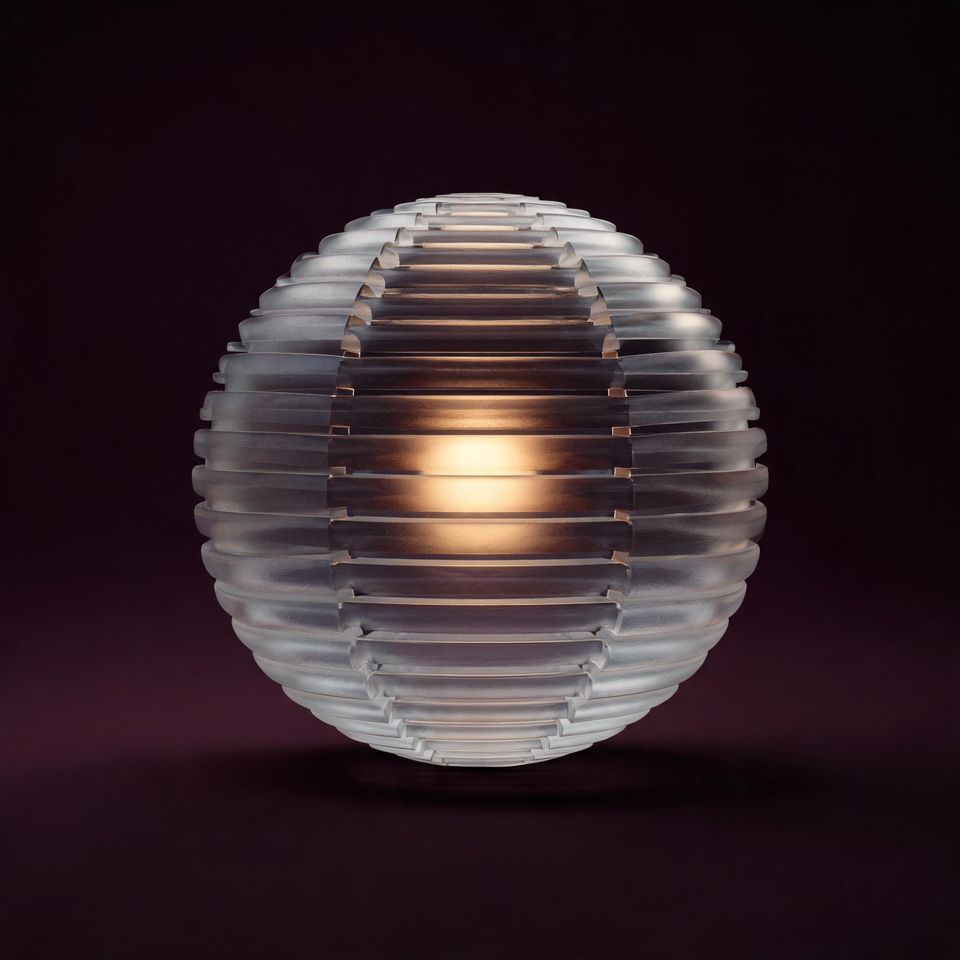
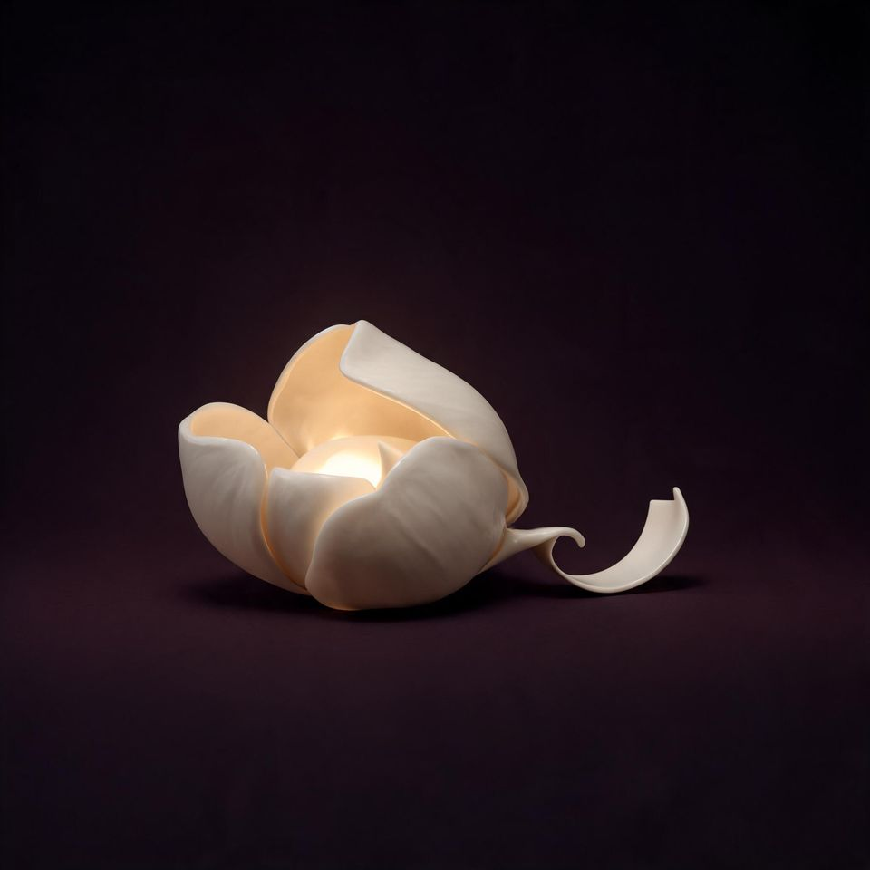
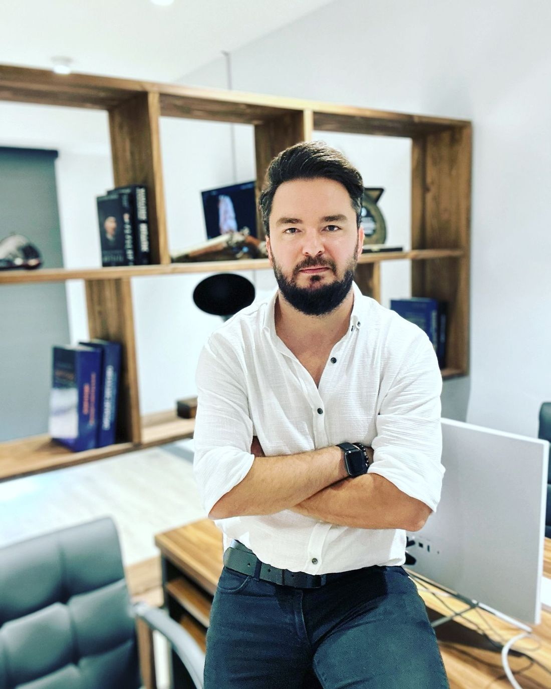
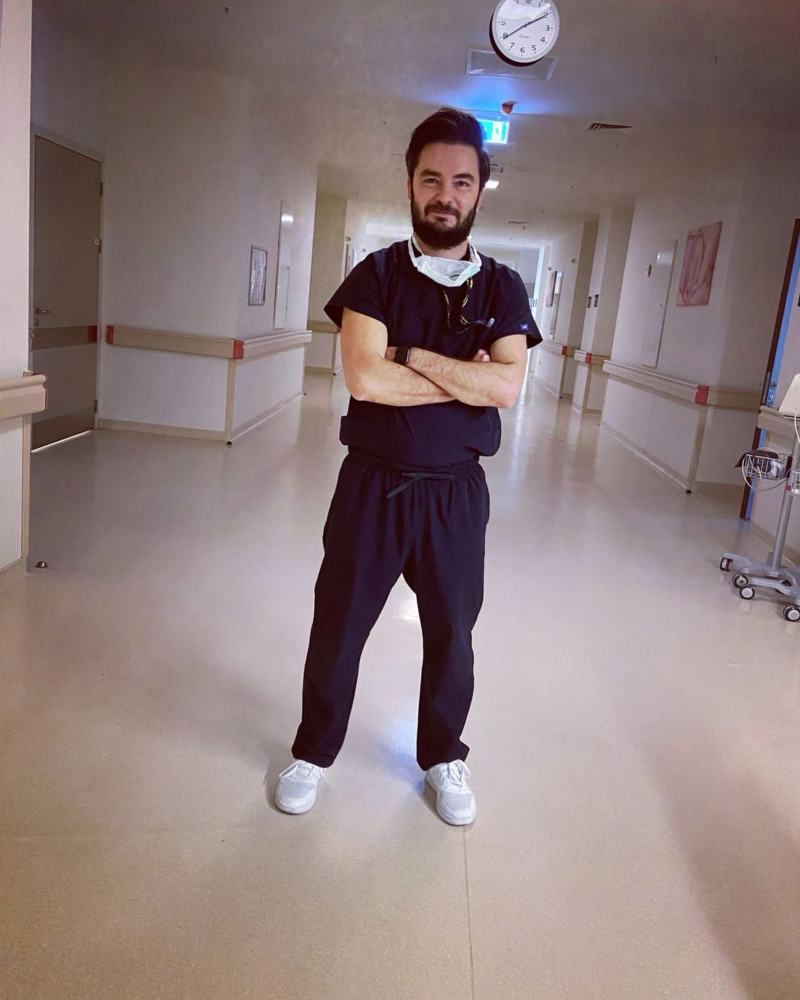
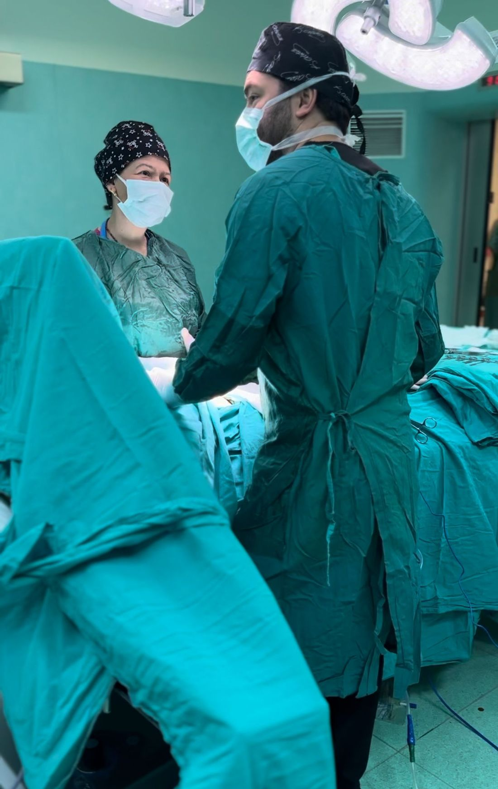

Eskişehir / Kadın Hastalıkları ve Doğum / Perinatoloji
İçinizrahat olsun.
Siz sormadan anlatan muayene: detaylı ultrason, riskli gebelik takibi ve doğum. Eskişehir, Hoşnudiye.

Gebelik öncesi danışmanlıktan doğuma, aynı hekim.
Hizmetleri sürecinize göre grupladım. Hangi adımda olduğunuzu seçin, o adımda neler yaptığımı görün.

Gebelik planlamadan önce başlar
Öykünüzü dinler, muayene ve gereken taramaları planlarım. Önceki gebeliklerinizde düşük, erken doğum veya preeklampsi yaşandıysa riskleri şimdiden belirler, yeni gebeliğe hazır başlarsınız.
- Gebelik öncesi danışmanlık
- Genetik test
- Gebelikte genetik tarama
- Normal randevu

Takip, riskli gebelikte sıklaşır
Rutin takipten riskli gebelik takibine: tansiyon, şeker ve kilonuz düzenli izlenir, bebeğin gelişimi ultrasonla ayrıntılı değerlendirilir. Çoğul gebelik, ileri yaş gebeliği, plasenta previa veya serviks yetersizliğinde kontroller sizin için sıklaştırılır.
- Perinatoloji randevusu
- Çoğul gebelik takibi
- Erken gebelik ultrasonografisi
- Doppler ultrason
- Renkli USG
- Nonstress test (NST)
- Rahim ağzına dikiş atılması (servikal serklaj)

Bebeğinizi ilk kez ekranda gördüğünüz muayene
İkili ve dörtlü tarama testleri, 11-14 hafta ultrasonu, 20-24 hafta detaylı ultrason ve fetal ekokardiyografi. 3D ve 4D ultrasonla bebeğinizin yüzünü yakından görebilirsiniz. Gerekli olduğunda amniosentez, kordosentez ve CVS yine aynı hekimde yapılır.
- Detaylı ultrason
- İkinci düzey obstetrik ultrasonografi
- İkili tarama testi
- Dörtlü tarama testi
- Harmony testi
- 3 boyutlu USG
- 4 boyutlu ultrason
- Fetal ekokardiyografi
- Amniosentez
- Kordosentez
- CVS (koryon villüs örneklemesi)
- 4 boyutlu renkli Doppler ikinci düzey ultrasonografi

Takibini yaptığım gebeliğin doğumunu da yaparım
Normal (vajinal) doğum ya da sezaryen. Doğum planını son haftalarda birlikte netleştirir; bebeğin geliş şekli, önceki doğumlarınız ve tercihlerinizi karara dahil ederim.
- Normal (vajinal) doğum
- Sezaryen doğum
Tüm hizmetlerin tam listesi
- Randevu
- 3 boyutlu USG
- 4 boyutlu ultrason
- 4 boyutlu renkli Doppler ikinci düzey ultrasonografi
- Amniosentez
- CVS (koryon villüs örneklemesi)
- Detaylı ultrason
- Doppler ultrason
- Dörtlü tarama testi
- Erken gebelik ultrasonografisi
- Fetal ekokardiyografi
- Gebelik öncesi danışmanlık
- Gebelikte genetik tarama
- Genetik test
- Harmony testi
- İkili tarama testi
- İkinci düzey obstetrik ultrasonografi
- Kordosentez
- Nonstress test (NST)
- Normal (vajinal) doğum
- Normal randevu
- Perinatoloji randevusu
- Rahim ağzına dikiş atılması (servikal serklaj)
- Renkli USG
- Sezaryen doğum
- Çoğul gebelik takibi
Kaçıncı haftadasınız?
Haftanızı seçin: o haftalarda hangi kontrol ve incelemenin yapıldığını görün.
Detaylı ultrason dönemi
20-24 hafta, bebeğin organ sistemlerinin tek tek incelendiği detaylı (ikinci düzey) ultrason için en uygun dönem. Bu haftalarda 3D ve 4D ultrasonla yüz görüntüsü de alınabilir.
- Detaylı ultrason
- İkinci düzey obstetrik ultrasonografi
- Fetal ekokardiyografi
- 3 boyutlu USG
- 4 boyutlu ultrason
Takip sıklığı ve test zamanlaması, öykünüze ve bulgulara göre hekiminiz tarafından planlanır. Bu takvim genel bilgilendirme içindir.
“Riskli gebelik” dediler. Şimdi ne olacak?
Bu tanı bir son değil, takibin sıklaşması demektir. Aşağıdaki durumlardan biri size söylendiyse önce görüşelim: neyin gerçekten risk olduğunu, neyin olmadığını netleştiririz.
Plasenta previa
Plasenta rahim ağzını kapatıyor ya da çok yakın duruyor. Kanama ve erken doğum riskine karşı yerleşim ultrasonla izlenir; doğum şekli ve zamanı buna göre planlanır.
Plasental dekolman (ablasyo plasenta)
Plasentanın rahim duvarından erken ayrılmasıdır. Ani karın ağrısı, karında sertleşme veya kanamada gecikmeden değerlendirme gerekir.
Gebelik zehirlenmesi (preeklampsi)
Yüksek tansiyon ve idrarda proteinle kendini gösterir. Baş ağrısı, görmede değişiklik, el ve yüzde şişlikte tansiyon takibi ve tetkikler önem kazanır.
Çoğul gebelik
İkiz ve üçüz gebeliklerde erken doğum ve bebekler arası gelişim farkı riski daha yüksektir. Daha sık ultrason, serviks ve kilo takibiyle izlenir.
İleri yaş gebeliği
35 yaş ve üzerindeki gebeliklerde kromozom taramaları ve kronik hastalıkların değerlendirilmesi öne çıkar.
Erken doğum ve serviks yetersizliği
Daha önce erken doğum, düşük veya servikse işlem öyküsü varsa serviks uzunluğu ultrasonla izlenir; gerekirse serklaj (rahim ağzına dikiş) planlanır.
Gebelikte tansiyon ve şeker yükselmesi
Gebelik hipertansiyonu ve gestasyonel diyabet düzenli kontrol ve gerekirse tedaviyle yönetilir; anne ve bebek açısından riskler böylece erken fark edilir.
Düşük öyküsü
Tekrarlayan düşük öyküsünde nedenler araştırılır; bir sonraki gebelik planlanmadan önce hazırlık yapılır.
Bu bilgiler genel bilgilendirme amaçlıdır; tanı ve tedavi için muayene gerekir.


Eğitim
- Tıp FakültesiOndokuz Mayıs Üniversitesi
- Kadın Hastalıkları ve Doğum UzmanlığıZeynep Kamil Kadın ve Çocuk Hastalıkları Eğitim ve Araştırma Hastanesi
- Perinatoloji Yan DalıEskişehir Osmangazi Üniversitesi Tıp Fakültesi
- DillerTürkçe, İngilizce
Hem kadın doğum, hem perinatoloji.
Ondokuz Mayıs Üniversitesi Tıp Fakültesi’nden mezun oldum. Kadın Hastalıkları ve Doğum uzmanlığımı Zeynep Kamil Kadın ve Çocuk Hastalıkları Eğitim ve Araştırma Hastanesi’nde, perinatoloji yan dal eğitimimi Eskişehir Osmangazi Üniversitesi Tıp Fakültesi Perinatoloji Bölümü’nde tamamladım.
Perinatolog; riskli gebelik takibi, detaylı ultrason ve gebelik içi girişimlerde (amniosentez, CVS, kordosentez) yan dal eğitimi almış kadın doğum uzmanıdır. İki uzmanlık aynı hekimde buluşunca takibinizi yapan hekim, doğumunuzu da yapabilir; ikinci bir hekime yönlendirilmek zorunda kalmazsınız.
Muayenehane ve hastane.
Görüşmeler Hoşnudiye’deki muayenehanemde yapılır; doğum ve ameliyatlar hastane ortamında gerçekleşir.

Hoşnudiye Mah. Ayşen Sk. No:28
26100 Eskişehir
0501 686 26 26
AraNakit ve kredi kartı
@dr_zaferbutun
Profili görSık sorulanlar
Muayeneye gelmeden önce en çok merak edilenler. Cevabını bulamadığınız soruyu telefonla ya da WhatsApp’tan sorabilirsiniz.
Perinatolog kimdir, kadın doğum uzmanından farkı nedir?
Perinatoloji, kadın hastalıkları ve doğum uzmanlığının yan dalıdır. Perinatologlar riskli gebeliklerin yönetimi, detaylı ultrason ve amniosentez, CVS, kordosentez gibi girişimlerde ek eğitim almış kadın doğum uzmanlarıdır. İki alanda da hizmet verdiğim için takibinizi yaptığım gebeliğin doğumunu da yapabilirim.
Detaylı ultrason hangi haftada yapılır?
Bebeğin organ sistemlerinin en iyi görüldüğü dönem 20-24 haftadır. Bunun dışında 11-14 haftaları arasındaki ilk trimester ultrasonu (ense kalınlığı ölçümü) ve 28-32 haftaları arasındaki gelişim ultrasonu ayrı birer değerlendirmedir.
Riskli gebeliğim yok, yine de gelmem gerekir mi?
Zorunlu değildir. Ancak detaylı ultrason gibi ileri incelemeler perinatologlar tarafından yapılır. Takibinizi yaptığınız hekimin yönlendirmesiyle ya da kendi isteğinizle görüşmeye gelebilirsiniz.
3D ve 4D ultrason nedir, tıbbi olarak gerekli mi?
3D ultrason, klasik 2D görüntülerden oluşturulan hacimsel görüntüdür; 4D bunun hareketli halidir. Tıbbi değerlendirme esas olarak 2D ultrasonla yapılır. 3D ve 4D görüntüler yüz, omurga, dudak ve damak gibi yapılarda tanıyı destekler ve ailelerin bebeği tanıdık bir şekilde görmesini sağlar.
Amniosentez, kordosentez ve CVS ne zaman gündeme gelir?
Tarama testlerinde risk saptanması, ileri anne yaşı, aile öyküsü ya da ultrasonda bir bulgu olduğunda düşünülür. CVS genellikle 11-14 hafta, amniosentez 15-20 hafta arasında yapılır. Hangisinin uygun olduğu görüşmede birlikte değerlendirilir.
Şehir dışından geliyorum, tek günde görüşebilir miyim?
Kütahya, Bilecik, Afyon gibi yakın illerden ve İstanbul, İzmir gibi uzak şehirlerden de hastalarımız geliyor. Randevu alırken şehir dışından geldiğinizi belirtin; görüntüleme ve tetkikleri tek günde planlayalım.
Sezaryen mi, normal doğum mu?
Karar; bebeğin geliş şekli, plasentanın yeri, önceki doğumlarınız ve kendi tercihiniz birlikte değerlendirilerek verilir. Uygun olduğu durumlarda normal doğum desteklenir.
Randevuyu nasıl alabilirim?
Doktortakvimi üzerinden uygun günü ve saati seçebilir, 0501 686 26 26 numarasını arayabilir ya da WhatsApp’tan yazabilirsiniz. Ödeme nakit ya da kredi kartıyla yapılır.
İçiniz rahat olsun.
Uygun gün ve saati birlikte belirleyelim. Sorularınızı da iletebilirsiniz.
Doktortakvimi üzerinden uygun günü ve saati seçin.
Randevu AlEn hızlı yol: arayın, birlikte bakalım.
0501 686 26 26Mesajınızı yazın, dönüş yapalım.
WhatsApp’tan yazın